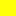

<!doctype html>
<html lang="en">
    <head>
        <meta charset="utf-8">
        <meta http-equiv="X-UA-Compatible" content="IE=edge">
        <meta name="viewport" content="initial-scale=1,user-scalable=no,maximum-scale=1,width=device-width">
        <meta name="mobile-web-app-capable" content="yes">
        <meta name="apple-mobile-web-app-capable" content="yes">
        <link rel="stylesheet" href="css/leaflet.css">
        <link rel="stylesheet" href="css/L.Control.Layers.Tree.css">
        <link rel="stylesheet" href="css/qgis2web.css">
        <link rel="stylesheet" href="css/fontawesome-all.min.css">
        <link rel="stylesheet" href="css/leaflet-measure.css">
        <style>
        #map {
            width: 909px;
            height: 565px;
        }
        </style>
        <title></title>
    </head>
    <body>
        <div id="map">
        </div>
        <script src="js/qgis2web_expressions.js"></script>
        <script src="js/leaflet.js"></script>
        <script src="js/L.Control.Layers.Tree.min.js"></script>
        <script src="js/leaflet.rotatedMarker.js"></script>
        <script src="js/leaflet.pattern.js"></script>
        <script src="js/leaflet-hash.js"></script>
        <script src="js/Autolinker.min.js"></script>
        <script src="js/rbush.min.js"></script>
        <script src="js/labelgun.min.js"></script>
        <script src="js/labels.js"></script>
        <script src="js/leaflet-measure.js"></script>
        <script src="data/vendrell_1.js"></script>
        <script src="data/Riscdinundaci_2.js"></script>
        <script src="data/ProjecteNO_3.js"></script>
        <script>
        var highlightLayer;
        function highlightFeature(e) {
            highlightLayer = e.target;

            if (e.target.feature.geometry.type === 'LineString' || e.target.feature.geometry.type === 'MultiLineString') {
              highlightLayer.setStyle({
                color: '#ffffff',
              });
            } else {
              highlightLayer.setStyle({
                fillColor: '#ffffff',
                fillOpacity: 1
              });
            }
            highlightLayer.openPopup();
        }
        var map = L.map('map', {
            zoomControl:true, maxZoom:28, minZoom:1
        }).fitBounds([[41.159944840922854,1.4421665977935436],[41.251262737571686,1.6276666627726406]]);
        var hash = new L.Hash(map);
        map.attributionControl.setPrefix('<a href="https://github.com/tomchadwin/qgis2web" target="_blank">qgis2web</a> &middot; <a href="https://leafletjs.com" title="A JS library for interactive maps">Leaflet</a> &middot; <a href="https://qgis.org">QGIS</a>');
        var autolinker = new Autolinker({truncate: {length: 30, location: 'smart'}});
        function removeEmptyRowsFromPopupContent(content, feature) {
         var tempDiv = document.createElement('div');
         tempDiv.innerHTML = content;
         var rows = tempDiv.querySelectorAll('tr');
         for (var i = 0; i < rows.length; i++) {
             var td = rows[i].querySelector('td.visible-with-data');
             var key = td ? td.id : '';
             if (td && td.classList.contains('visible-with-data') && feature.properties[key] == null) {
                 rows[i].parentNode.removeChild(rows[i]);
             }
         }
         return tempDiv.innerHTML;
        }
        document.querySelector(".leaflet-popup-pane").addEventListener("load", function(event) {
          var tagName = event.target.tagName,
            popup = map._popup;
          // Also check if flag is already set.
          if (tagName === "IMG" && popup && !popup._updated) {
            popup._updated = true; // Set flag to prevent looping.
            popup.update();
          }
        }, true);
        var measureControl = new L.Control.Measure({
            position: 'topleft',
            primaryLengthUnit: 'meters',
            secondaryLengthUnit: 'kilometers',
            primaryAreaUnit: 'sqmeters',
            secondaryAreaUnit: 'hectares'
        });
        measureControl.addTo(map);
        document.getElementsByClassName('leaflet-control-measure-toggle')[0]
        .innerHTML = '';
        document.getElementsByClassName('leaflet-control-measure-toggle')[0]
        .className += ' fas fa-ruler';
        var bounds_group = new L.featureGroup([]);
        function setBounds() {
        }
        map.createPane('pane_GoogleMaps_0');
        map.getPane('pane_GoogleMaps_0').style.zIndex = 400;
        var layer_GoogleMaps_0 = L.tileLayer('https://mt1.google.com/vt/lyrs=r&x={x}&y={y}&z={z}', {
            pane: 'pane_GoogleMaps_0',
            opacity: 1.0,
            attribution: '',
            minZoom: 1,
            maxZoom: 28,
        });
        layer_GoogleMaps_0;
        map.addLayer(layer_GoogleMaps_0);
        function pop_vendrell_1(feature, layer) {
            layer.on({
                mouseout: function(e) {
                    for (var i in e.target._eventParents) {
                        if (typeof e.target._eventParents[i].resetStyle === 'function') {
                            e.target._eventParents[i].resetStyle(e.target);
                        }
                    }
                    if (typeof layer.closePopup == 'function') {
                        layer.closePopup();
                    } else {
                        layer.eachLayer(function(feature){
                            feature.closePopup()
                        });
                    }
                },
                mouseover: highlightFeature,
            });
            var popupContent = '<table>\
                    <tr>\
                        <td colspan="2">' + (feature.properties['MUNICIPI'] !== null ? autolinker.link(feature.properties['MUNICIPI'].toLocaleString()) : '') + '</td>\
                    </tr>\
                    <tr>\
                        <td colspan="2">' + (feature.properties['COMARCA'] !== null ? autolinker.link(feature.properties['COMARCA'].toLocaleString()) : '') + '</td>\
                    </tr>\
                    <tr>\
                        <td colspan="2">' + (feature.properties['PROVINCIA'] !== null ? autolinker.link(feature.properties['PROVINCIA'].toLocaleString()) : '') + '</td>\
                    </tr>\
                    <tr>\
                        <td colspan="2">' + (feature.properties['NOM_MUNI'] !== null ? autolinker.link(feature.properties['NOM_MUNI'].toLocaleString()) : '') + '</td>\
                    </tr>\
                    <tr>\
                        <td colspan="2">' + (feature.properties['NOMN_MUNI'] !== null ? autolinker.link(feature.properties['NOMN_MUNI'].toLocaleString()) : '') + '</td>\
                    </tr>\
                    <tr>\
                        <td colspan="2">' + (feature.properties['NOMG_MUNI'] !== null ? autolinker.link(feature.properties['NOMG_MUNI'].toLocaleString()) : '') + '</td>\
                    </tr>\
                    <tr>\
                        <td colspan="2">' + (feature.properties['CAP_MUNI'] !== null ? autolinker.link(feature.properties['CAP_MUNI'].toLocaleString()) : '') + '</td>\
                    </tr>\
                    <tr>\
                        <td colspan="2">' + (feature.properties['CAPN_MUNI'] !== null ? autolinker.link(feature.properties['CAPN_MUNI'].toLocaleString()) : '') + '</td>\
                    </tr>\
                    <tr>\
                        <td colspan="2">' + (feature.properties['CAPG_MUNI'] !== null ? autolinker.link(feature.properties['CAPG_MUNI'].toLocaleString()) : '') + '</td>\
                    </tr>\
                    <tr>\
                        <td colspan="2">' + (feature.properties['SUP_MUNI'] !== null ? autolinker.link(feature.properties['SUP_MUNI'].toLocaleString()) : '') + '</td>\
                    </tr>\
                    <tr>\
                        <td colspan="2">' + (feature.properties['ORSUP_MUNI'] !== null ? autolinker.link(feature.properties['ORSUP_MUNI'].toLocaleString()) : '') + '</td>\
                    </tr>\
                </table>';
            layer.bindPopup(popupContent, {maxHeight: 400});
            var popup = layer.getPopup();
            var content = popup.getContent();
            var updatedContent = removeEmptyRowsFromPopupContent(content, feature);
            popup.setContent(updatedContent);
        }

        function style_vendrell_1_0() {
            return {
                pane: 'pane_vendrell_1',
                opacity: 1,
                color: 'rgba(35,35,35,0.75)',
                dashArray: '',
                lineCap: 'butt',
                lineJoin: 'miter',
                weight: 1.0, 
                fill: true,
                fillOpacity: 1,
                fillColor: 'rgba(251,154,153,0.75)',
                interactive: true,
            }
        }
        map.createPane('pane_vendrell_1');
        map.getPane('pane_vendrell_1').style.zIndex = 401;
        map.getPane('pane_vendrell_1').style['mix-blend-mode'] = 'normal';
        var layer_vendrell_1 = new L.geoJson(json_vendrell_1, {
            attribution: '',
            interactive: true,
            dataVar: 'json_vendrell_1',
            layerName: 'layer_vendrell_1',
            pane: 'pane_vendrell_1',
            onEachFeature: pop_vendrell_1,
            style: style_vendrell_1_0,
        });
        bounds_group.addLayer(layer_vendrell_1);
        map.addLayer(layer_vendrell_1);
        function pop_Riscdinundaci_2(feature, layer) {
            layer.on({
                mouseout: function(e) {
                    for (var i in e.target._eventParents) {
                        if (typeof e.target._eventParents[i].resetStyle === 'function') {
                            e.target._eventParents[i].resetStyle(e.target);
                        }
                    }
                    if (typeof layer.closePopup == 'function') {
                        layer.closePopup();
                    } else {
                        layer.eachLayer(function(feature){
                            feature.closePopup()
                        });
                    }
                },
                mouseover: highlightFeature,
            });
            var popupContent = '<table>\
                    <tr>\
                        <th scope="row">risc</th>\
                        <td>' + (feature.properties['risc'] !== null ? autolinker.link(feature.properties['risc'].toLocaleString()) : '') + '</td>\
                    </tr>\
                </table>';
            layer.bindPopup(popupContent, {maxHeight: 400});
            var popup = layer.getPopup();
            var content = popup.getContent();
            var updatedContent = removeEmptyRowsFromPopupContent(content, feature);
            popup.setContent(updatedContent);
        }

        function style_Riscdinundaci_2_0(feature) {
            switch(String(feature.properties['risc'])) {
                case 'Molt Baix':
                    return {
                pane: 'pane_Riscdinundaci_2',
                opacity: 1,
                color: 'rgba(51,160,44,0.75)',
                dashArray: '',
                lineCap: 'butt',
                lineJoin: 'miter',
                weight: 1.0, 
                fill: true,
                fillOpacity: 1,
                fillColor: 'rgba(51,160,44,0.75)',
                interactive: true,
            }
                    break;
                case 'Baix':
                    return {
                pane: 'pane_Riscdinundaci_2',
                opacity: 1,
                color: 'rgba(178,223,138,0.75)',
                dashArray: '',
                lineCap: 'butt',
                lineJoin: 'miter',
                weight: 1.0, 
                fill: true,
                fillOpacity: 1,
                fillColor: 'rgba(178,223,138,0.75)',
                interactive: true,
            }
                    break;
                case 'Mig':
                    return {
                pane: 'pane_Riscdinundaci_2',
                opacity: 1,
                color: 'rgba(255,255,9,0.75)',
                dashArray: '',
                lineCap: 'butt',
                lineJoin: 'miter',
                weight: 1.0, 
                fill: true,
                fillOpacity: 1,
                fillColor: 'rgba(255,255,9,0.75)',
                interactive: true,
            }
                    break;
                case 'Alt':
                    return {
                pane: 'pane_Riscdinundaci_2',
                opacity: 1,
                color: 'rgba(255,127,0,0.75)',
                dashArray: '',
                lineCap: 'butt',
                lineJoin: 'miter',
                weight: 1.0, 
                fill: true,
                fillOpacity: 1,
                fillColor: 'rgba(255,127,0,0.75)',
                interactive: true,
            }
                    break;
                case 'Molt Alt':
                    return {
                pane: 'pane_Riscdinundaci_2',
                opacity: 1,
                color: 'rgba(227,26,28,0.75)',
                dashArray: '',
                lineCap: 'butt',
                lineJoin: 'miter',
                weight: 1.0, 
                fill: true,
                fillOpacity: 1,
                fillColor: 'rgba(227,26,28,0.75)',
                interactive: true,
            }
                    break;
            }
        }
        map.createPane('pane_Riscdinundaci_2');
        map.getPane('pane_Riscdinundaci_2').style.zIndex = 402;
        map.getPane('pane_Riscdinundaci_2').style['mix-blend-mode'] = 'normal';
        var layer_Riscdinundaci_2 = new L.geoJson(json_Riscdinundaci_2, {
            attribution: '',
            interactive: true,
            dataVar: 'json_Riscdinundaci_2',
            layerName: 'layer_Riscdinundaci_2',
            pane: 'pane_Riscdinundaci_2',
            onEachFeature: pop_Riscdinundaci_2,
            style: style_Riscdinundaci_2_0,
        });
        bounds_group.addLayer(layer_Riscdinundaci_2);
        map.addLayer(layer_Riscdinundaci_2);
        function pop_ProjecteNO_3(feature, layer) {
            layer.on({
                mouseout: function(e) {
                    for (var i in e.target._eventParents) {
                        if (typeof e.target._eventParents[i].resetStyle === 'function') {
                            e.target._eventParents[i].resetStyle(e.target);
                        }
                    }
                    if (typeof layer.closePopup == 'function') {
                        layer.closePopup();
                    } else {
                        layer.eachLayer(function(feature){
                            feature.closePopup()
                        });
                    }
                },
                mouseover: highlightFeature,
            });
            var popupContent = '<table>\
                    <tr>\
                        <td colspan="2">' + (feature.properties['adress'] !== null ? autolinker.link(feature.properties['adress'].toLocaleString()) : '') + '</td>\
                    </tr>\
                    <tr>\
                        <td colspan="2">' + (feature.properties['population'] !== null ? autolinker.link(feature.properties['population'].toLocaleString()) : '') + '</td>\
                    </tr>\
                    <tr>\
                        <td colspan="2">' + (feature.properties['descripcio'] !== null ? autolinker.link(feature.properties['descripcio'].toLocaleString()) : '') + '</td>\
                    </tr>\
                    <tr>\
                        <td colspan="2">' + (feature.properties['image'] !== null ? autolinker.link(feature.properties['image'].toLocaleString()) : '') + '</td>\
                    </tr>\
                </table>';
            layer.bindPopup(popupContent, {maxHeight: 400});
            var popup = layer.getPopup();
            var content = popup.getContent();
            var updatedContent = removeEmptyRowsFromPopupContent(content, feature);
            popup.setContent(updatedContent);
        }

        function style_ProjecteNO_3_0() {
            return {
                pane: 'pane_ProjecteNO_3',
        rotationAngle: 0.0,
        rotationOrigin: 'center center',
        icon: L.icon({
            iconUrl: 'markers/ProjecteNO_3.svg',
            iconSize: [190.0, 190.0]
        }),
                interactive: true,
            }
        }
        map.createPane('pane_ProjecteNO_3');
        map.getPane('pane_ProjecteNO_3').style.zIndex = 403;
        map.getPane('pane_ProjecteNO_3').style['mix-blend-mode'] = 'normal';
        var layer_ProjecteNO_3 = new L.geoJson(json_ProjecteNO_3, {
            attribution: '',
            interactive: true,
            dataVar: 'json_ProjecteNO_3',
            layerName: 'layer_ProjecteNO_3',
            pane: 'pane_ProjecteNO_3',
            onEachFeature: pop_ProjecteNO_3,
            pointToLayer: function (feature, latlng) {
                var context = {
                    feature: feature,
                    variables: {}
                };
                return L.marker(latlng, style_ProjecteNO_3_0(feature));
            },
        });
        bounds_group.addLayer(layer_ProjecteNO_3);
        map.addLayer(layer_ProjecteNO_3);
        var baseMaps = {};
        var overlaysTree = [
            {label: ' Projecte NOÉ', layer: layer_ProjecteNO_3},
            {label: 'Risc d\'inundació<br /><table><tr><td style="text-align: center;"></td><td>Molt Baix</td></tr><tr><td style="text-align: center;"></td><td>Baix</td></tr><tr><td style="text-align: center;"></td><td>Mig</td></tr><tr><td style="text-align: center;"></td><td>Alt</td></tr><tr><td style="text-align: center;"></td><td>Molt Alt</td></tr></table>', layer: layer_Riscdinundaci_2},
            {label: ' vendrell', layer: layer_vendrell_1},
            {label: "GoogleMaps", layer: layer_GoogleMaps_0},]
        var lay = L.control.layers.tree(null, overlaysTree,{
            //namedToggle: true,
            //selectorBack: false,
            //closedSymbol: '&#8862; &#x1f5c0;',
            //openedSymbol: '&#8863; &#x1f5c1;',
            //collapseAll: 'Collapse all',
            //expandAll: 'Expand all',
            collapsed: false, 
        });
        lay.addTo(map);
        setBounds();
        </script>
    </body>
</html>
